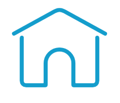
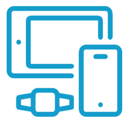

Innovative ideas of keeping active when you cannot go out
Use your tech to keep an eye on how active you are and keep yourself motivated.
The bennefits of getting out and some ideas on how to keep it exciting
Keep in contact for activity inspiration
Think about setting yourself a challenge or trying a new activity
World Health Organisation
Key Points:
- Take short active breaks during the day
- Follow an online exercise class
- Walk
- Stand up
- Use relaxation techniques
- FLEXIBLE: You don’t have to work round gym or class times, and you can do it in the middle of the night.
- EFFECTIVE: a push-up or a cardio routine is just as tough in your LIVING ROOM as the gym
- ADAPTABLE: you can decide what works for you
- FUN: you can mix it up as much as you like
(The bennefits of home exercise)
Working from home? Don't sit down for too long!
Get up every hour and move about. You might not have the usual meetings or other activities you usually do at work, which inadverently get you up and moving.
Make use of what you have at home:

Motivation:
Tracking your activity may well help keep you motivated. If you compare how active you were beforehand it might just encourage you to go out an take that walk (if it is sensible to do so) or try and move more about the house.
Setting goals:
Goal setting is a potential major way to help you firstly keep active during social distancing and secondly stave off some boredom. For more general ideas see 'Set yourself a challenge'. In terms of using apps and tech maybe just aim to beat your step count from the day before, or climb an extra floor?
Currently you are allowed to go outside to exercise durng self-isolaiton, as long as you keep a 2 meter distance from everyone else. Many are using this as an opportunity to take daily walks, or get out running and socialising. If you can get out maybe start tracking your exericse to see if you can improve distance or speed comapred to last time.
Reminders to move:
Many apps and wearbale watches/activity trackers give you reminders to move. For example my fitbit buzzes at 10 to the hour if I haven't reached 250 steps yet. Day two into working at home and I'm already getting a lot more buzzes!
If you have a similar device with this capacity I would recommend turning this fucntion on. If you don't you can download an app such as Stand up! or Randomly Remindme (other simialar apps are available) that remind you to move. Equally you can set up your computer to send you reminders to take a break.
All of these steps should also help you stay more productive while working at home (here is some evidence).
The social app:
Many activity tracking apps have a social or competative element to them. For example with a fitbit you can compare your daily or weekly step count to friends and compete in challenges or virtual races.
See "Keeping social" for more ideas